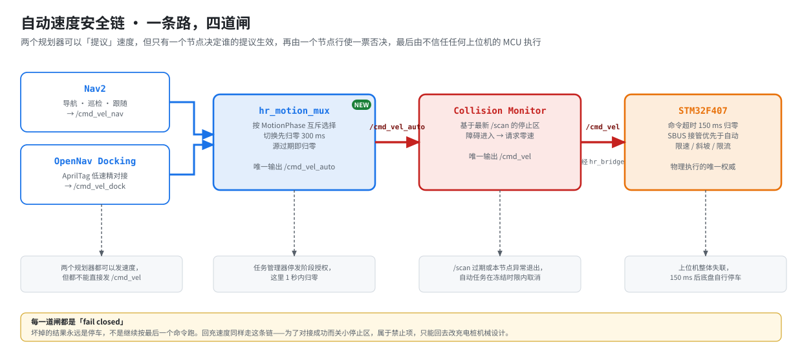
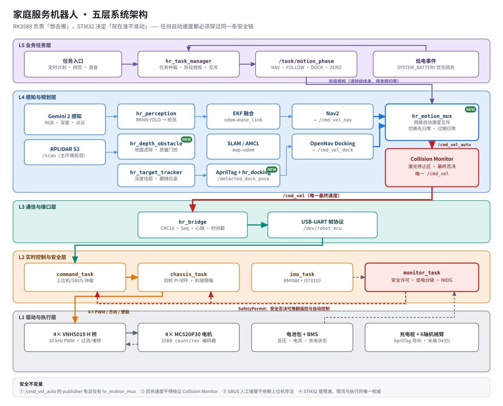
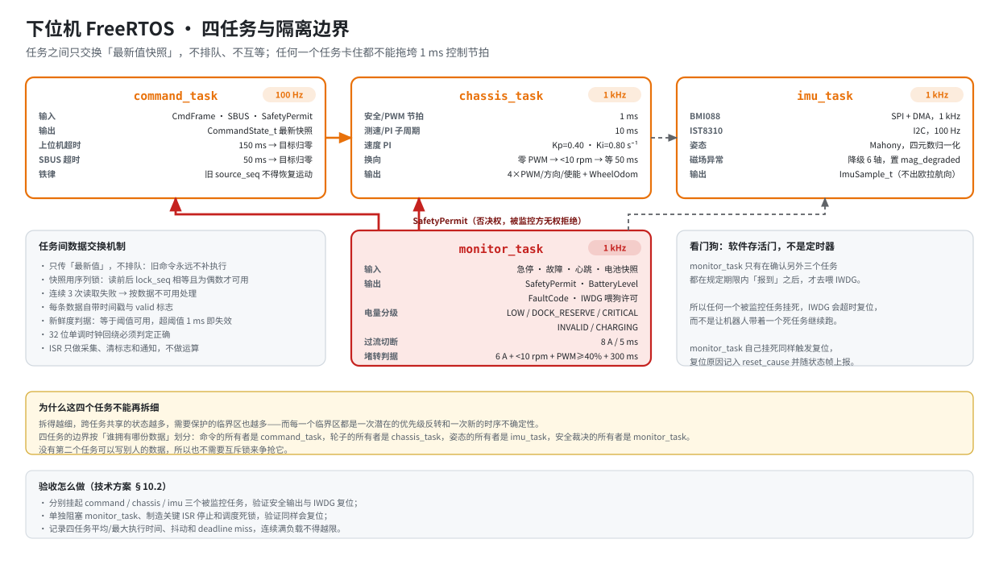
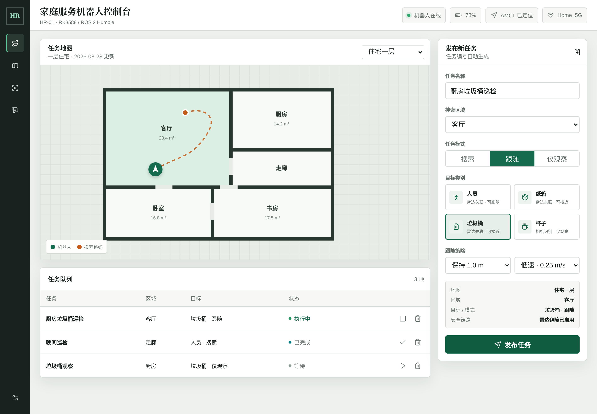
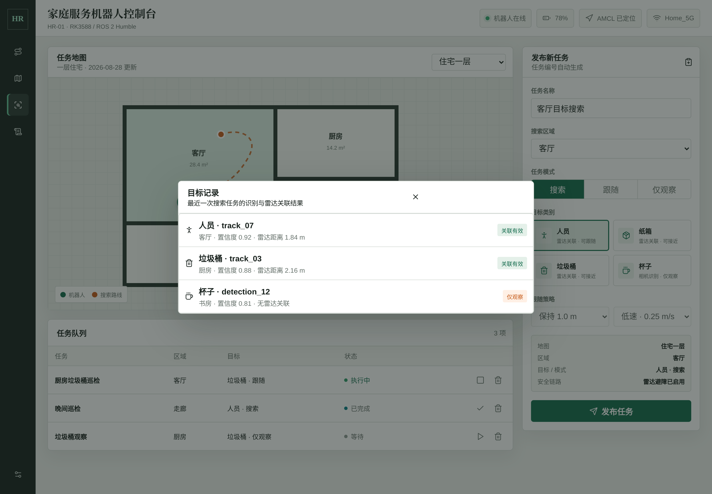
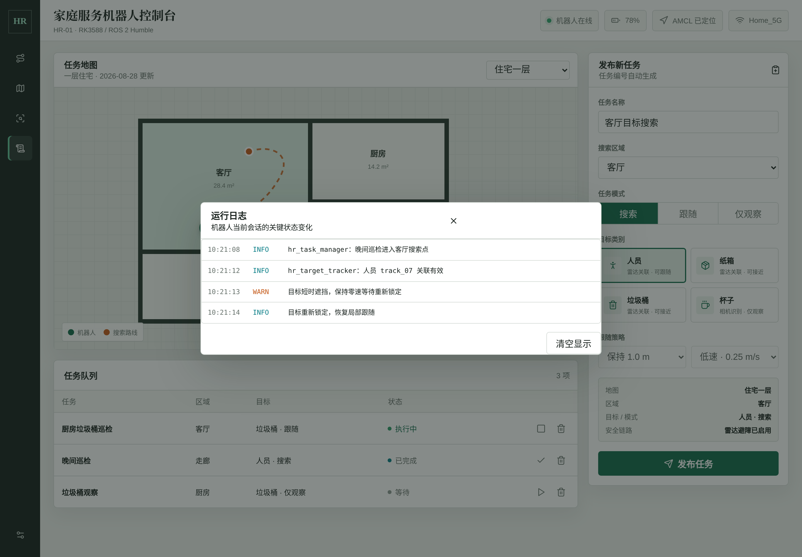
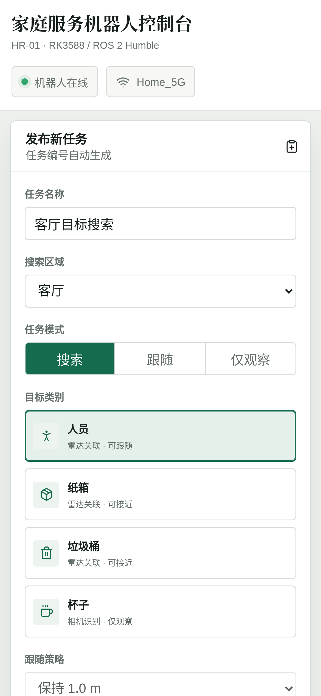
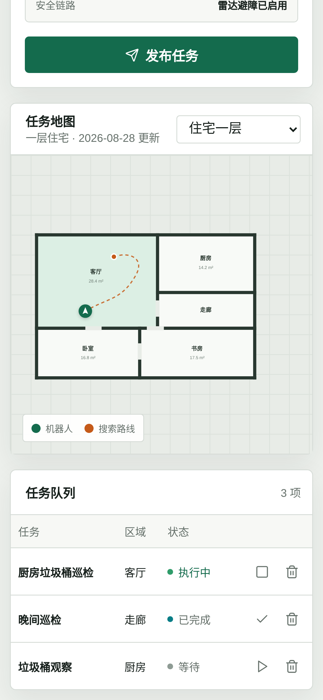
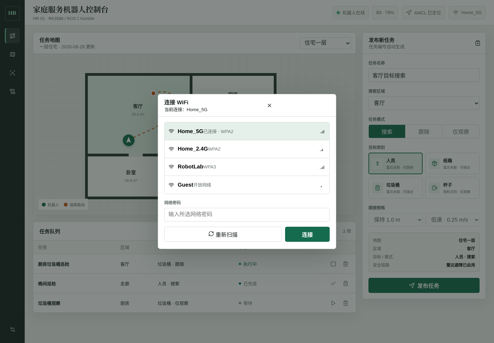
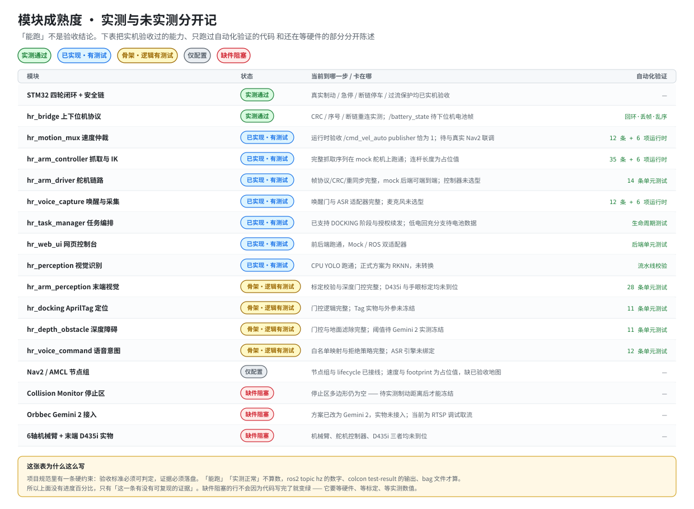

RK3588 + STM32F407 双控分层架构的家庭服务机器人。ROS 2 Humble、四轮差速底盘、 RPLIDAR S3 导航、Gemini 2 深度感知、AprilTag 自主回充。 工程主线不是「跑得多快」，而是让速度链上的每一道闸坏掉时都朝停车的方向失效。
家用移动机器人最容易出事的地方，不是路径规划不够聪明。 一个节点崩了，最后一条速度命令还留在总线上；两个规划器同时发速度，底盘收到交替命令； 为了顺利对上充电桩，有人把避障停止区关小了——这三件事都足以让机器在家里撞到人。
所以整个项目围绕一条不变量组织：任何自动速度都只有一条路可走， 且这条路上每一道闸坏掉时都朝停车的方向失效。

两个规划器都可以「提议」速度，但只有 hr_motion_mux 决定谁的提议生效；
Collision Monitor 行使一票否决；而 STM32 对这两者都不信任——上位机整体失联 150 ms 后，它自己把车停住。
按任务阶段在 Nav2 与 Docking 之间互斥选择，切换先强制归零 300 ms，
任一源过期立即归零。/cmd_vel_auto 的 publisher 有且仅有它一个。
基于最新 /scan 的激光停止区。回充速度同样走这条链——
为了对接成功而关小停止区属于禁止项，只能回去改充电桩机械设计。
命令超时 150 ms 归零，SBUS 人工接管优先于自动控制且不依赖上位机存活。 限速、斜坡、限流和 H 桥输出只由它决定。
分层的判据是职责能不能被抢走：上位机可以崩、可以卡、可以被 Wi-Fi 断开， 但都不能影响 SBUS 人工接管和硬件急停。

上位机负责「想去哪」，下位机负责「现在准不准动」。
| 类别 | 选型 | 职责 |
|---|---|---|
| 上位机 | 野火鲁班猫 5（RK3588，8 GB + 64 GB） | 视觉、SLAM、导航、任务编排 |
| 深度相机 | Orbbec Gemini 2 | RGB + 深度 + 点云；三维测距、高低障碍、AprilTag |
| 激光雷达 | RPLIDAR S3 | SLAM、定位、二维避障、停止区主观测 |
| 下位机 | STM32F407VET6 + FreeRTOS | 实时控制、编码器、状态估计、安全监控 |
| 执行器 | 4× MC520P30_12V 有刷减速编码器电机 | 30:1、1560 count/rev（四倍频） |
| 功率级 | 4× VNH5019A-E 独立全桥 | 20 kHz PWM、过流/过温硬件保护 |
| 人工接管 | HT-10A + SBUS 接收机 | 不经过上位机的接管与急停 |
| 电池与回充 | 带 BMS 电池包 + AprilTag 充电桩 | 低电分级、自主回充、充电真实性确认 |
任务边界按「谁拥有哪份数据」划分，而不是按功能大小。 没有第二个任务能写别人的数据，所以也不需要互斥锁去争它。

看门狗在这里是软件存活门而不是定时器：monitor_task 只有确认
另外三个任务都按期报到，才去喂 IWDG。任何一个被监控任务挂死，结果是复位，
而不是带着一个死任务继续跑。
局域网内手机和电脑都能用。设计边界很硬：网页只能创建和取消离散任务， 不提供任何摇杆或速度直通接口。远程遥控一个看不见的机器人是危险的， 所以这条路径从一开始就没有留。






这张表没有进度百分比，只有「这一条是怎么被证明的」。
项目规范里有一条硬约束：验收标准必须可判定，证据必须落盘——
「能跑」不算数，ros2 topic hz 的数字、colcon test-result 的输出、bag 文件才算。
全部证据在 docs/acceptance/，每一项都能照着命令重跑一遍。

目前为止，每一个真正危险的缺陷都是「跑起来」而不是「读代码」发现的。
| 缺陷 | 怎么暴露的 |
|---|---|
| 任务管理器只发一次阶段授权，导航 1 秒后底盘被归零 | 速度仲裁运行时验收 |
| 底盘停稳判据读了不存在的字段，「没数据」被当成「已停稳」 | 写机械臂验收脚本时 |
| 逆运动学符号配对写反，返回镜像姿态——不报错，只是抓空 | FK→IK 往返测试 |
apriltag_msgs 根本不含位姿，原实现假设的字段不存在 | 装上 apriltag_ros 后首次运行 |
| TF 缓存让相机看不见 Tag 之后仍返回旧位姿 | 改用 TF 后的失效注入 |
| 停止区多边形写成字符串，节点 configure 直接失败 | 真的去启动它的时候 |
AI 写代码的成本趋近于零，成本转移到了「凭什么相信这段代码是对的」。这个项目用三根支柱回答。
它应该是什么样。约 2200 行的技术方案是唯一权威， 先改文档再改代码——顺序反了，一致性检查就成了橡皮图章。
它实际是什么样。单元测试写的是规则而不是实现： 每条测试对应设计文档里一条编号规则，边界按「等于阈值可用、超阈值一个单位即失效」验证。
两者有没有分叉。源文件头部带 @spec 回指标记，
追溯表逐条记录代码与方案条款的对应及成熟度。
# 依赖：Ubuntu 22.04 + ROS 2 Humble
./scripts/install_deps.sh all # Nav2 节点组、AprilTag、Docking、vision_msgs
cd upper
source /opt/ros/humble/setup.bash
colcon build
source install/setup.bash
# 安全 Mock 总入口：不连接硬件，不发布任何速度
ros2 launch hr_bringup mock.launch.py
# 全部单元测试（148 条）
python3 -m pytest upper/src/*/test tests -q
# 机械臂全链：mock 舵机控制器，PC 上即可跑通完整抓取序列
ros2 run hr_arm_driver arm_driver --ros-args -p transport:=mock &
ros2 run hr_arm_controller arm_controller